Мої Вайфи
Найкращі аніме дівчата, які назавжди залишаться в моєму серці

 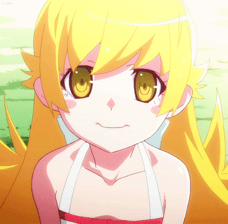
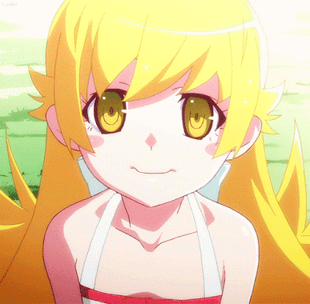

 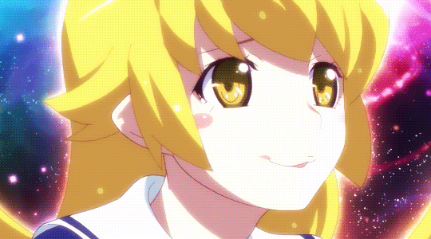
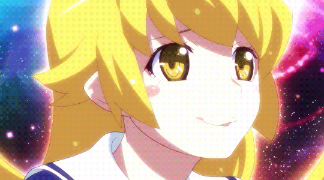

Shinobu Oshino
⠀⠀ 🟡 Ака – Kiss-Shot Acerola-Orion Heart-Under-Blade. Моя #1 вайфу назавжди! Її образ закарбувався у моїй свідомості ще давно, коли випадково натрапив на нарізки в YouTube. Просто якась випадкова сцена, але в ній було щось заворожливе. Потім натрапив на коуб із боєм Арарагі проти Shinobu, і це стало точкою неповернення. Я одразу пірнув у світ Monogatari, без роздумів, без вагань.
⠀⠀ 🟡 Shinobu була прекрасна у всьому. Її граційність, загадковість, потужна харизма – усе притягувало й не відпускало. Я буквально закохався в кожен її прояв, кожен момент на екрані, кожен її погляд. Навіть зараз іноді уявляю: от вступлю в універ, повернуся з пар, піду пізно через метро... і раптом зустріну її. Але ні, це не аніме – натомість я зустрів гопників. Реальність сосе.
⠀⠀ 🟡 Але на цьому моє фанатіння не зупинилося. Якось натрапив на симулятор, переважно заточений під VR. Моєму щастю не було меж! Я просто забив на все, засів і надовго. Гуляв, розглядав, захоплювався. Це було просто щось неймовірне – можливість бути поруч із нею, хай і віртуально. Провів я в ньому дуже багато часу, чекав на нові обнови, але нажаль автор закинув проект.
⠀⠀ 🟡 Вона ж ідеальна у будь-якому вигляді: хоч Hot Milf Mommy у своїй гарячій дорослій формі, хоч загадковий тінейджер, хоч класична лоля, у якій вона перебуває більшість часу. Чарівна зовнішність, привабливі форми, ніжне волосся з цими фірмовими закрутками біля вух – усе в ній чудово. Ідеальне поєднання різних типів характерів, зміна настроїв, саркастичність, спокійна впевненість і тонка, ледь помітна ніжність. У дорослій формі Кісшот — це втілення вампірської елегантності та еротичної привабливості. Вона висока, з розкішним жовтим волоссям, пронизливими золотими очима, стрункою та спокусливою фігурою, що випромінює грацію та впевненість. Її постава — це чиста велич і панування. У дитячій формі Shinobu, навпаки, виглядає як маленька мила лоля, що створює контраст між її зовнішністю та глибоким, мудрим характером. Її золоті очі все ще зберігають той самий хижий блиск, а її манера поводитися дає зрозуміти, що перед тобою не просто дівчинка, а древній хижак, що скучив за своїми колишніми силами. Та й до того, цеж вампір. Прекрасний вампір, сила та вигляд якого змінюється в залежності від випитої крові. Тож питання: де тут можна стати донором? Вампірський образ Shinobu додає їй особливої харизми.
⠀⠀ 🟡 Один із її найвідоміших аспектів — це любов до пончиків. Вона буквально стає іншою, коли бачить їх, і це один із небагатьох моментів, коли її холодна та відсторонена натура змінюється на щось по-справжньому миле. Ця контрастність між її аристократичною сутністю та дитячою радістю від простих речей робить її ще більш унікальною.
⠀⠀ 🟡 Shinobu Oshino — це один із найбільш унікальних персонажів у всьому аніме-світі, яких я бачив. Вона ідеально поєднує в собі холодну мудрість, спокусливу силу та несподівану милий вайб, що розкривається в дрібницях. Вона таємнича, небезпечна, іронічна та вірна — це робить її ідеальною вайфу для тих, хто цінує складність персонажа, а не просто поверхневу красу.
⠀⠀ 🟡 Shinobu була прекрасна у всьому. Її граційність, загадковість, потужна харизма – усе притягувало й не відпускало. Я буквально закохався в кожен її прояв, кожен момент на екрані, кожен її погляд. Навіть зараз іноді уявляю: от вступлю в універ, повернуся з пар, піду пізно через метро... і раптом зустріну її. Але ні, це не аніме – натомість я зустрів гопників. Реальність сосе.
⠀⠀ 🟡 Але на цьому моє фанатіння не зупинилося. Якось натрапив на симулятор, переважно заточений під VR. Моєму щастю не було меж! Я просто забив на все, засів і надовго. Гуляв, розглядав, захоплювався. Це було просто щось неймовірне – можливість бути поруч із нею, хай і віртуально. Провів я в ньому дуже багато часу, чекав на нові обнови, але нажаль автор закинув проект.
⠀⠀ 🟡 Вона ж ідеальна у будь-якому вигляді: хоч Hot Milf Mommy у своїй гарячій дорослій формі, хоч загадковий тінейджер, хоч класична лоля, у якій вона перебуває більшість часу. Чарівна зовнішність, привабливі форми, ніжне волосся з цими фірмовими закрутками біля вух – усе в ній чудово. Ідеальне поєднання різних типів характерів, зміна настроїв, саркастичність, спокійна впевненість і тонка, ледь помітна ніжність. У дорослій формі Кісшот — це втілення вампірської елегантності та еротичної привабливості. Вона висока, з розкішним жовтим волоссям, пронизливими золотими очима, стрункою та спокусливою фігурою, що випромінює грацію та впевненість. Її постава — це чиста велич і панування. У дитячій формі Shinobu, навпаки, виглядає як маленька мила лоля, що створює контраст між її зовнішністю та глибоким, мудрим характером. Її золоті очі все ще зберігають той самий хижий блиск, а її манера поводитися дає зрозуміти, що перед тобою не просто дівчинка, а древній хижак, що скучив за своїми колишніми силами. Та й до того, цеж вампір. Прекрасний вампір, сила та вигляд якого змінюється в залежності від випитої крові. Тож питання: де тут можна стати донором? Вампірський образ Shinobu додає їй особливої харизми.
⠀⠀ 🟡 Один із її найвідоміших аспектів — це любов до пончиків. Вона буквально стає іншою, коли бачить їх, і це один із небагатьох моментів, коли її холодна та відсторонена натура змінюється на щось по-справжньому миле. Ця контрастність між її аристократичною сутністю та дитячою радістю від простих речей робить її ще більш унікальною.
⠀⠀ 🟡 Shinobu Oshino — це один із найбільш унікальних персонажів у всьому аніме-світі, яких я бачив. Вона ідеально поєднує в собі холодну мудрість, спокусливу силу та несподівану милий вайб, що розкривається в дрібницях. Вона таємнича, небезпечна, іронічна та вірна — це робить її ідеальною вайфу для тих, хто цінує складність персонажа, а не просто поверхневу красу.
 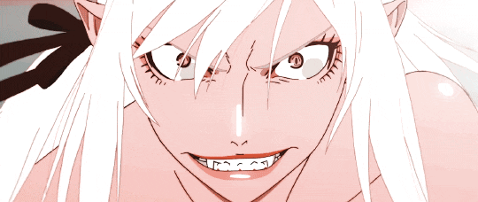
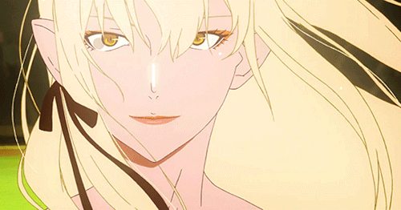
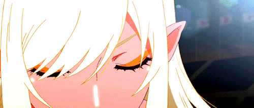
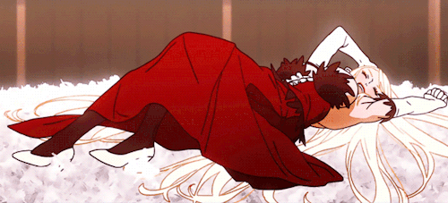
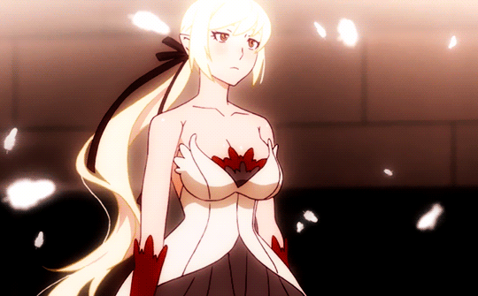
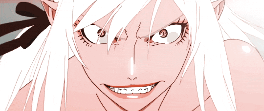
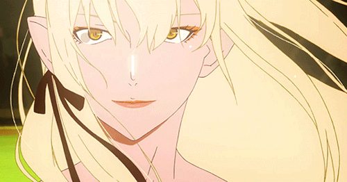
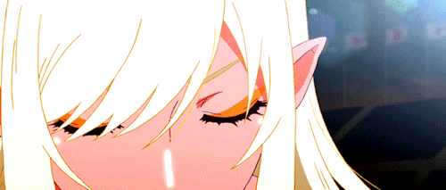
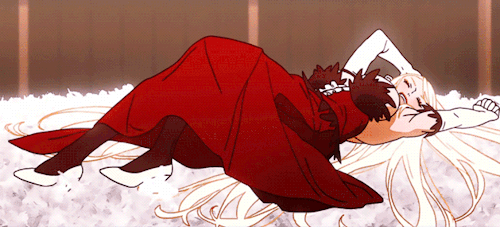
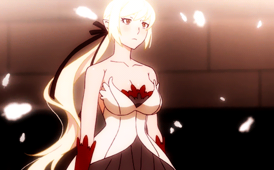


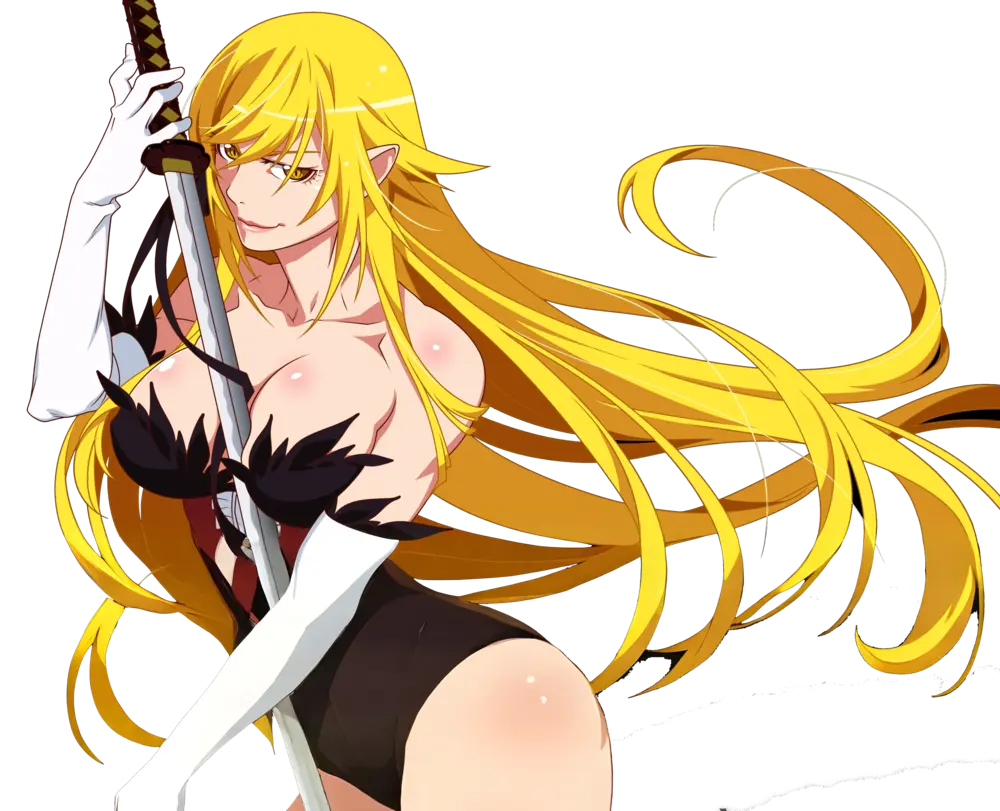


Hex Maniac
⠀⠀ 🟣 Це дуже таємнича дівчина буквально. Про неї майже нічого не відомо, таємнича тренерка привидових покемонів, вона є частиною світу Покемонів.
⠀⠀ 🟣 Перша поява була в одній грі про покемонів, вона з'являлася на малий проміжок часу, при постійних перезаходах в ліфті на одному поверсі. Її зовнішність це темно-фіолетове вбрання типу мантії і чудове «дурне» волосся, яке я відразу полюбив. Так само закручені очі, це її фішка, вони прямо гіпнотизують чудовим виглядом. Її погляд, сповнений таємничості, та загадкова маніакальна посмішка стали її візитною карткою. Ну і звичайно її сексуальна та приваблива зовнішність. В її зовнішності поєднується містичність і невинність, що додає особливого шарму. Її сексуальна привабливість лежить у її інтелектуальному вигляді та відчутті, що вона володіє якимось потужним таємним знанням або магічними силами. Ну і звісно її big booty booba яка вона є у представленні у більшості. Довге, скуйовджене темно-фіолетове волосся, яке спадає хвилями, надаючи їй дико-спокусливий вигляд. Темно фіолетове готичне плаття, яке підкреслює її фігуру та надає їй містичної привабливості.
⠀⠀ 🟣 На жаль, багато часу про неї нічого розумного і офіційного не було і фани почали створювати її характер та зовнішність самі. Розробники помітили збільшену активність і вводять, NPC в гру, а точніше весь класс назвавши Hex Maniac. Багато де, для цієї її зовнішності віділяють ім'я як Helena. Вже була створена модель тренера, а також підбір кастів голосу, який дуже підходить їй.
⠀⠀ 🟣 Вона тиха і спокійна, також дуже сором'язлива з людьми, її друзі - це 3 її улюблених покемонів типу привид. Обов'язково хочеться стати її другом, щоб вона не сумувала.
⠀⠀ 🟣 Пізніше я знайшов сабредит з нею, який був покинутий і було всього 1к людей там і останній пост був, на той час, роки тому. Я зробився думкою відродити його. Почав туди постити арти та дискусії, лайки почали набиратись і люди почали знову з'являтися. І тепер нас уже перевалило за 4к людей. Ще прекрасним доповненням, знайшлося навіть кілька роликів ASMR <3
⠀⠀ 🟣 Не давно добавили ще одну зовнішність, де вона по слухам, може грати роль в основній сюжетній лінії в новій грі про покемонів. А ну про зовнішність, це та сама Hex Maniac, але тільки старша, років на 30, що превзносить mommy vibes, носить корсет, щоб казатися стрункішою, має більш пряме волосся, але той же загадковіший погляд. Також вона кажеться і вигляде більш похмурою. Є думки що це мати відомої всім Hex Maniac. Після добавлення цієї зовнішності хайп на час, для цього персонажу виріс, і малюють все більше артів та розглядають все більше теорій і створюють все більше дискусій.
⠀⠀ 🟣 Я радий що для неї привертають все більше уваги і створють контент з нею. Надіюсь тільки що великий хайп не принесе їй занепад в плані інформації, щоб нові люди не вносили міссінфу та спрощення її образу, який у кожного був свій, але приївся головний який є базованим для більшості. Та також коли немає великої популярності у персонажа, то він робиться якимось, більш особливим, бо знаєш про нього тільки ти в цілому.
⠀⠀ 🟣 Перша поява була в одній грі про покемонів, вона з'являлася на малий проміжок часу, при постійних перезаходах в ліфті на одному поверсі. Її зовнішність це темно-фіолетове вбрання типу мантії і чудове «дурне» волосся, яке я відразу полюбив. Так само закручені очі, це її фішка, вони прямо гіпнотизують чудовим виглядом. Її погляд, сповнений таємничості, та загадкова маніакальна посмішка стали її візитною карткою. Ну і звичайно її сексуальна та приваблива зовнішність. В її зовнішності поєднується містичність і невинність, що додає особливого шарму. Її сексуальна привабливість лежить у її інтелектуальному вигляді та відчутті, що вона володіє якимось потужним таємним знанням або магічними силами. Ну і звісно її big booty booba яка вона є у представленні у більшості. Довге, скуйовджене темно-фіолетове волосся, яке спадає хвилями, надаючи їй дико-спокусливий вигляд. Темно фіолетове готичне плаття, яке підкреслює її фігуру та надає їй містичної привабливості.
⠀⠀ 🟣 На жаль, багато часу про неї нічого розумного і офіційного не було і фани почали створювати її характер та зовнішність самі. Розробники помітили збільшену активність і вводять, NPC в гру, а точніше весь класс назвавши Hex Maniac. Багато де, для цієї її зовнішності віділяють ім'я як Helena. Вже була створена модель тренера, а також підбір кастів голосу, який дуже підходить їй.
⠀⠀ 🟣 Вона тиха і спокійна, також дуже сором'язлива з людьми, її друзі - це 3 її улюблених покемонів типу привид. Обов'язково хочеться стати її другом, щоб вона не сумувала.
⠀⠀ 🟣 Пізніше я знайшов сабредит з нею, який був покинутий і було всього 1к людей там і останній пост був, на той час, роки тому. Я зробився думкою відродити його. Почав туди постити арти та дискусії, лайки почали набиратись і люди почали знову з'являтися. І тепер нас уже перевалило за 4к людей. Ще прекрасним доповненням, знайшлося навіть кілька роликів ASMR <3
⠀⠀ 🟣 Не давно добавили ще одну зовнішність, де вона по слухам, може грати роль в основній сюжетній лінії в новій грі про покемонів. А ну про зовнішність, це та сама Hex Maniac, але тільки старша, років на 30, що превзносить mommy vibes, носить корсет, щоб казатися стрункішою, має більш пряме волосся, але той же загадковіший погляд. Також вона кажеться і вигляде більш похмурою. Є думки що це мати відомої всім Hex Maniac. Після добавлення цієї зовнішності хайп на час, для цього персонажу виріс, і малюють все більше артів та розглядають все більше теорій і створюють все більше дискусій.
⠀⠀ 🟣 Я радий що для неї привертають все більше уваги і створють контент з нею. Надіюсь тільки що великий хайп не принесе їй занепад в плані інформації, щоб нові люди не вносили міссінфу та спрощення її образу, який у кожного був свій, але приївся головний який є базованим для більшості. Та також коли немає великої популярності у персонажа, то він робиться якимось, більш особливим, бо знаєш про нього тільки ти в цілому.
 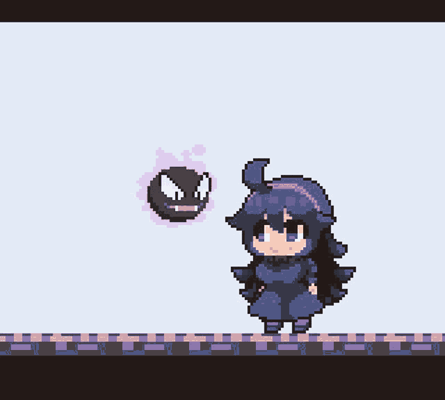
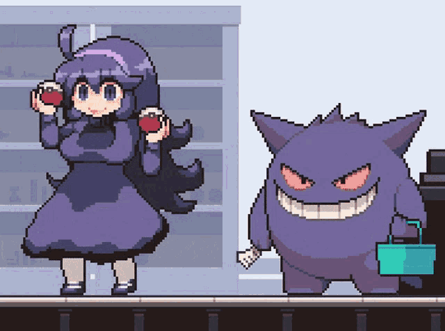
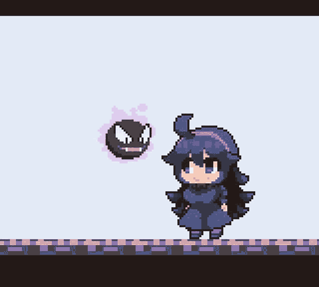
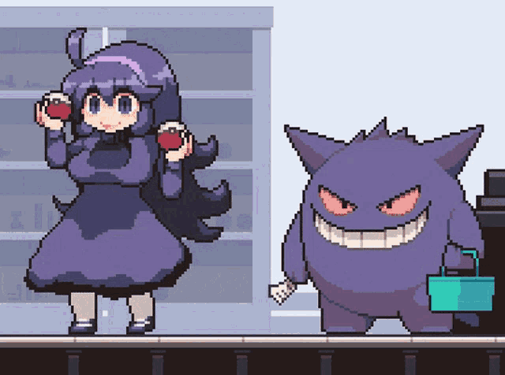


Shinobu Oshino
Monogatari

Hex Maniac
Pokemon
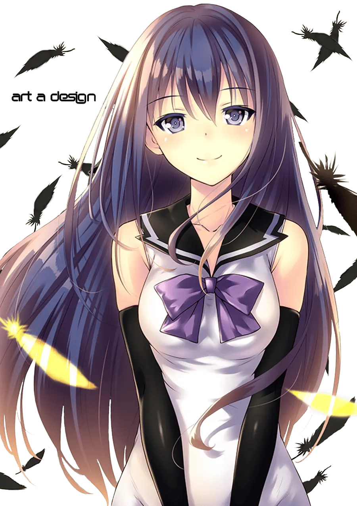
Neko Kuroha
Brynhildr In The Darkness
Karura Kure
Kenganverse
Holo
Spice and wolf
Aqua
Konosuba
Tohru
Miss Kobayashi's Dragon Maid
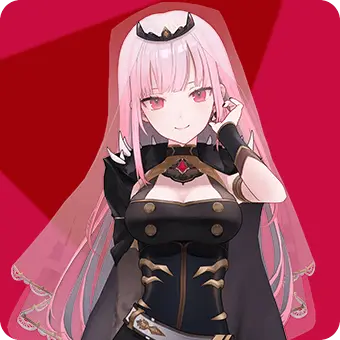
Mori Calliope
Vtuber
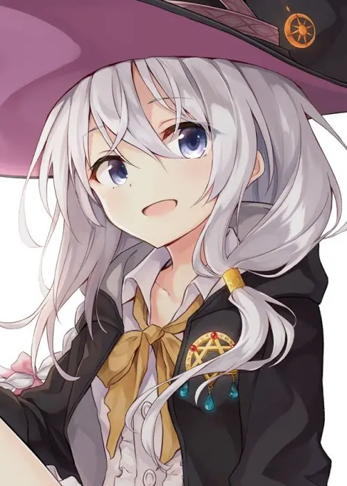
Elaina
The Journey of Elaina
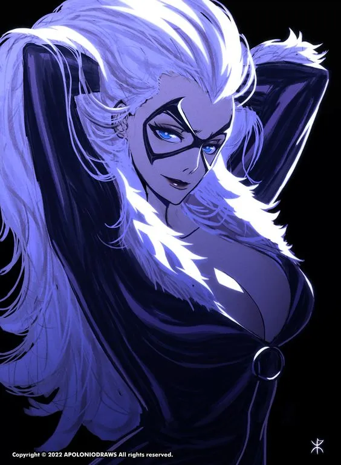
Felicia Hardy
Spiderman
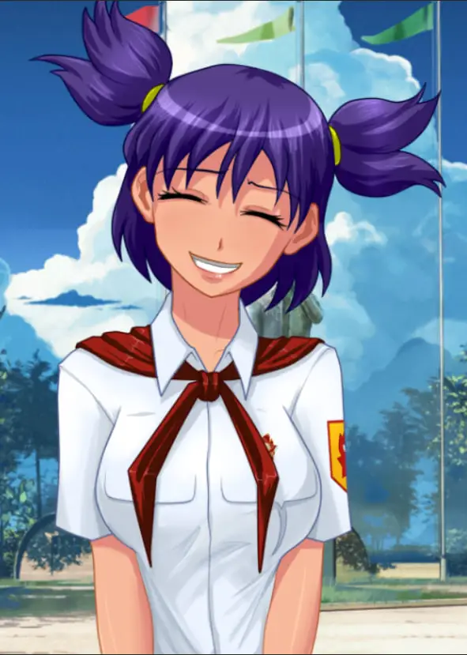
Lena
Everlasting summer
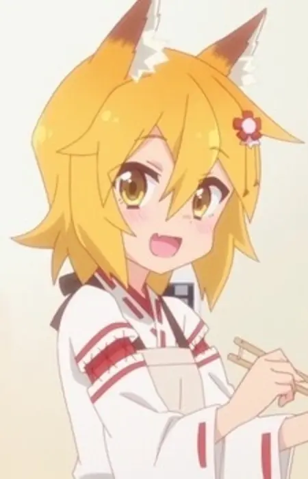
Senko
The Helpful Fox Senko-san
Dakini
Imawabi no Dakini
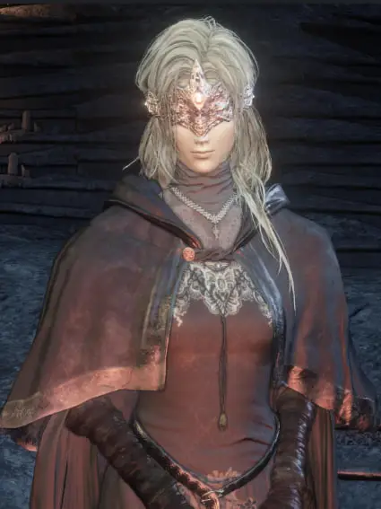
Fire Keeper
Dark Souls 3
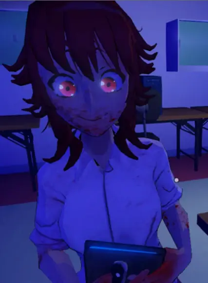
Saiko
Saiko no Sutoka
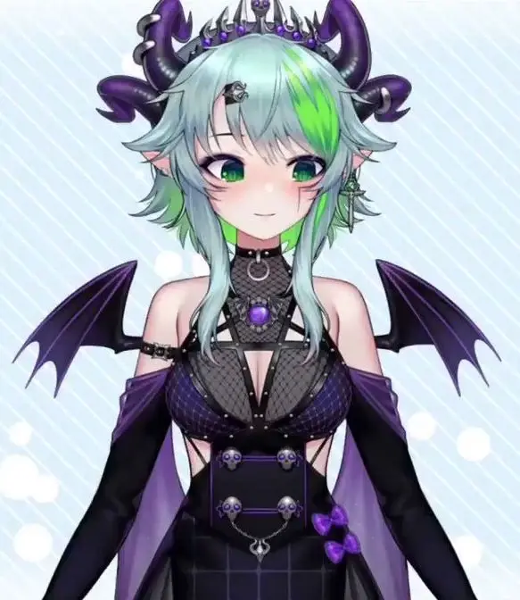
Apricot Froot
Vtuber
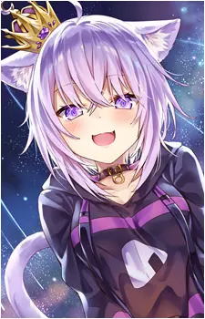
Nekomata Okayu
Vtuber
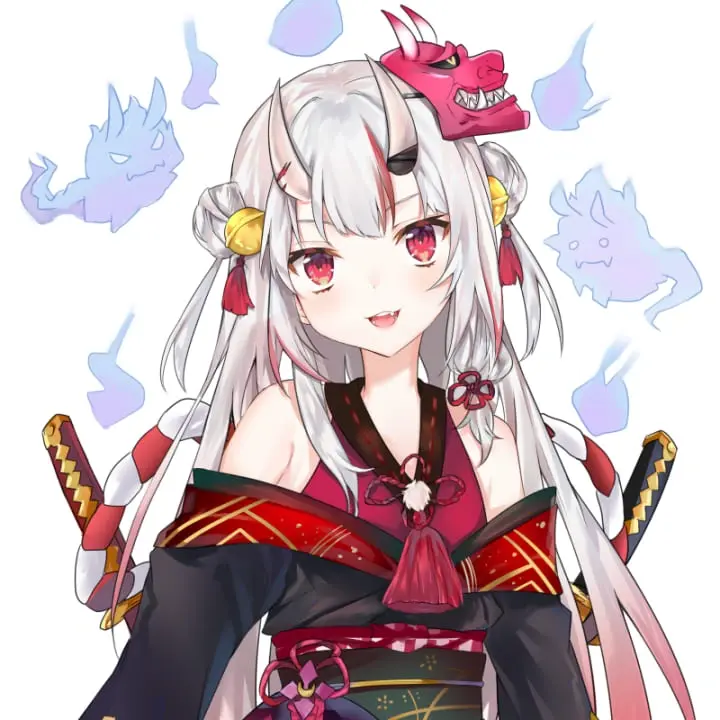
Nakiri Ayame
Vtuber
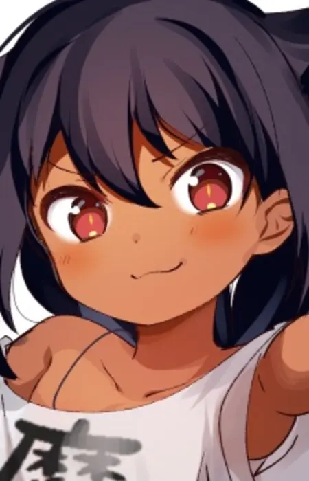
Jahy
The Great Jahy Will Not Be Defeated!
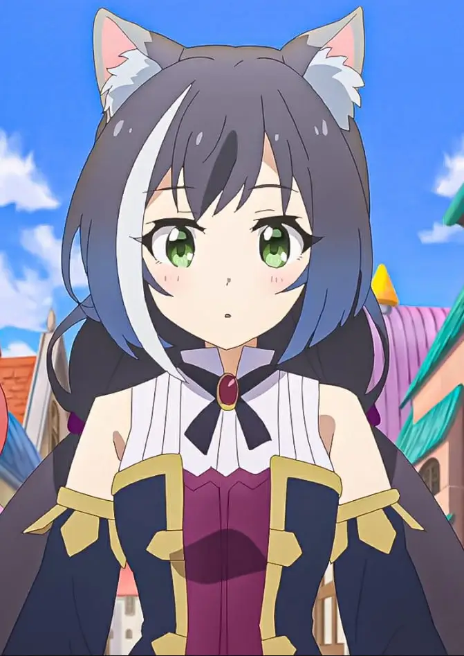
Karyl
Princess Connect! Re:Dive
Zero Two
Darling in the Franxx
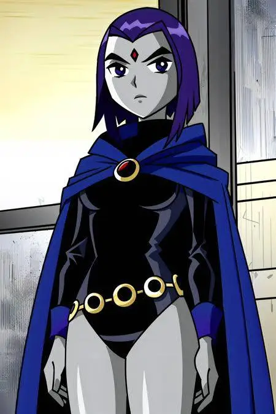
Raven
Teen titans